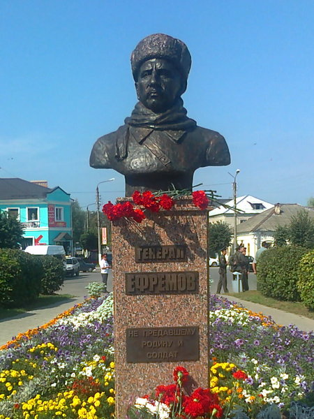
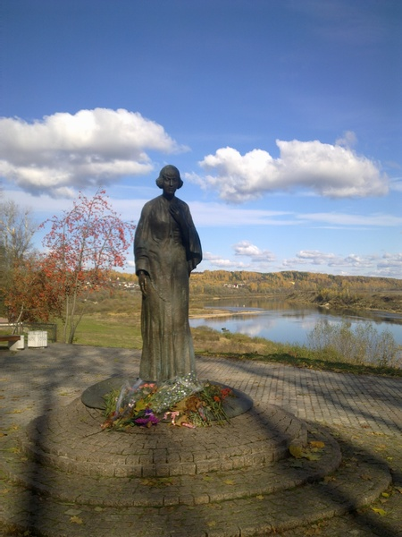
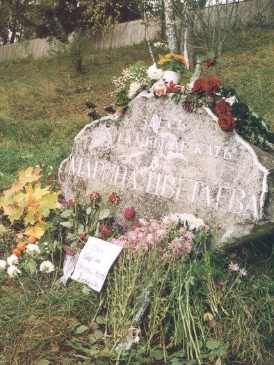
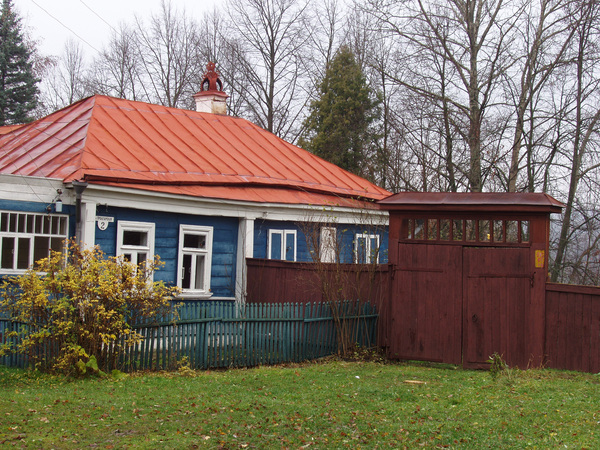
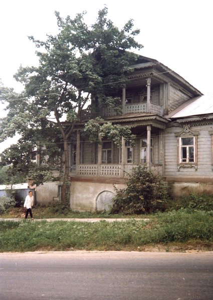
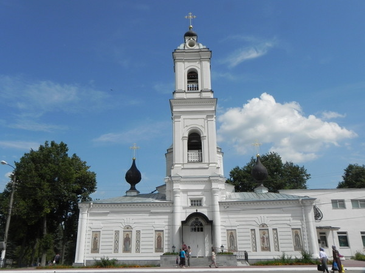
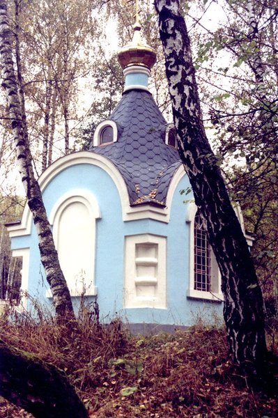
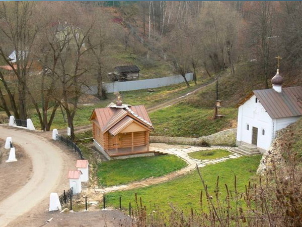

БЮСТ ГЕРОЯ РОССИИ М.Г. ЕФРЕМОВА
Легендарный командующий 33-й армией, генерал-лейтенант М.Г. Ефремов родился в Тарусе 27 февраля
1897г. Автор памятника – скульптор А.Д. Казачок .
БЮСТ И. В. ЦВЕТАЕВА
Иван Владимирович Цветаев (1847-1913гг.) - профессор, основатель Музея изящных искусств в Москве
(ныне Государственный музей изобразительных искусств им.А.С. Пушкина). Бюст находится на территории
пансионата «Серебряный век» - где ранее находилась летняя дача «Песочное» которую семья Цветаевых
арендовала с 1892- по1910 гг., Автор- скульптор А.Д.Казачок.

ПАМЯТНИК МАРИНЕ ЦВЕТАЕВОЙ
Марина Цветаева(1892-1941гг.), один из крупнейших русских поэтов XX века. Детские годы и юность
провела в Тарусе. Авторы памятника - скульпторы В.Б.Соскиев, В.А.Мессерер.

КАМЕНЬ ПАМЯТИ М.И. ЦВЕТАЕВОЙ
На высоком берегу Оки, в согласно воле М. Цветаевой установлен камень (тарусский доломит) с надписью
«Здесь хотела бы лежать Марина Цветаева».

ДОМ ПИСАТЕЛЯ К.Г.ПАУСТОВСКОГО
На ул.Пролетарской д.5 жил и работал (1955-1968) русский писатель К.Г.Паустовский. 30 мая 1967 года
К.Г. Паустовскому присвоено звание "Почетный гражданин города Тарусы".
МОГИЛА К.Г.ПАУСТОВСКОГО
На высоком берегу реки Тарусы на городском кладбище находится могила писателя К.Г.
Паустовского.Ежегодно 31 мая в день рождения писателя в городе проводятся литературные праздники
К.Г. Паустовского, поклонники его творчества в этот день возлагают на могилу цветы.
ДОМ Н.ЗАБОЛОЦКОГО
В доме № 36 по ул. К. Либкнехта провел последние годы своей жизни поэт Николай Заболоцкий.
(1957-1958гг.). Здесь поэт написал стихи: «Одинокий дуб», «Летний вечер», «Вечер на Оке» и др.
ПАМЯТНИК НА МОГИЛЕ В.Э. БОРИСОВА-МУСАТОВА
Памятник на могиле известного художника В.Э. Борисова-Мусатова установлен в 1911 г. его другом
известным скульптором А. Т. Матвеевым. В.Э. Борисов-Мусатов (1870–1905гг.) провёл в Тарусе последние
месяцы жизни. Здесь он написал свои лучшие картины: «Осенняя песнь», «Куст орешника», «Венки
васильков», «Реквием».
ДОМ В.А.ВАТАГИНА
В. А. Ватагин (1884-1969) — основоположник анималистического жанра в русском советском искусстве,
народный художник РСФСР, академик, педагог, лауреат государственных премий. В 1914 г. построил
деревянный дом-мастерскую и прожил в нем 55 лет, похоронен на городском кладбище Тарусы.
Дом В.А. Ватагина расположен по адресу: г. Таруса, ул. Пролетарская, д. 35.

ДОМ ДОБРОТВОРСКИХ
Е.А. Добротворская — двоюродная сестра И.В. Цветаева. В этом доме Цветаевы часто бывали. Дом
расположен по адресу: ул. Ленина, д. 29.

СОБОР СВЯТЫХ АПОСТОЛОВ ПЕТРА И ПАВЛА
Собор св. Апостолов Петра и Павла является памятником архитектуры .Построен в 1758—1789 гг. Вновь
открыт после реконструкции в 2009г.
ХРАМ ВОСКРЕСЕНИЯ ХРИСТОВА
Памятник архитектуры 17 века. Неоднократно перестраивался. г. Таруса, ул. Ефремова, 7 (Воскресенская
гора)

ЧАСОВНЯ В ЧЕСТЬ СВ.СЕРГИЯ РАДОНЕЖСКОГО
Часовня находится на городском кладбище.

ЧАСОВНЯ В ЧЕСТЬ ИКОНЫ БОГОЛЮБСКОЙ БОЖИЕЙ МАТЕРИ
Часовня и купель у святого источника в Игумновом овраге. Святой родник под Воскресенской горой
известен с давних времен.
ДОМ ПИСАТЕЛЕЙ А.К.ВИНОГРАДОВА И Н.В.БОГДАНОВА
Дом двухэтажный, бревенчатый, с террасами и мезонином. Здесь в разное время жили и писали книги А. К.
Виноградов (1888 – 1946) и Н. В. Богданов (1906 – 1989). А.К. Виноградов является автором популярных
в середине 1980-х годов романов «Черный консул», «Три цвета времени», «Осуждение Паганини» и др.
Детский писатель Н.В. Богданов известен, прежде всего, тем, что его перу принадлежит книга «О смелых
и умелых». В доме бывали Марина и Анастасия Цветаевы, В. А. Ватагин, К. Паустовский и др.
Дом расположен по адресу: г. Таруса, ул. Шмидта, д. 2.